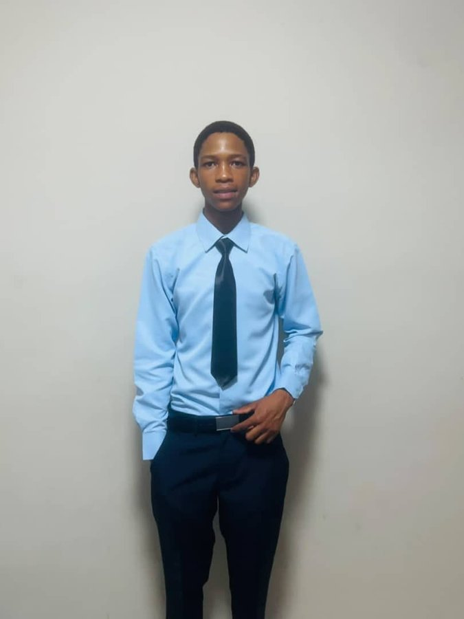
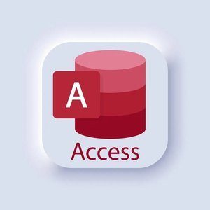
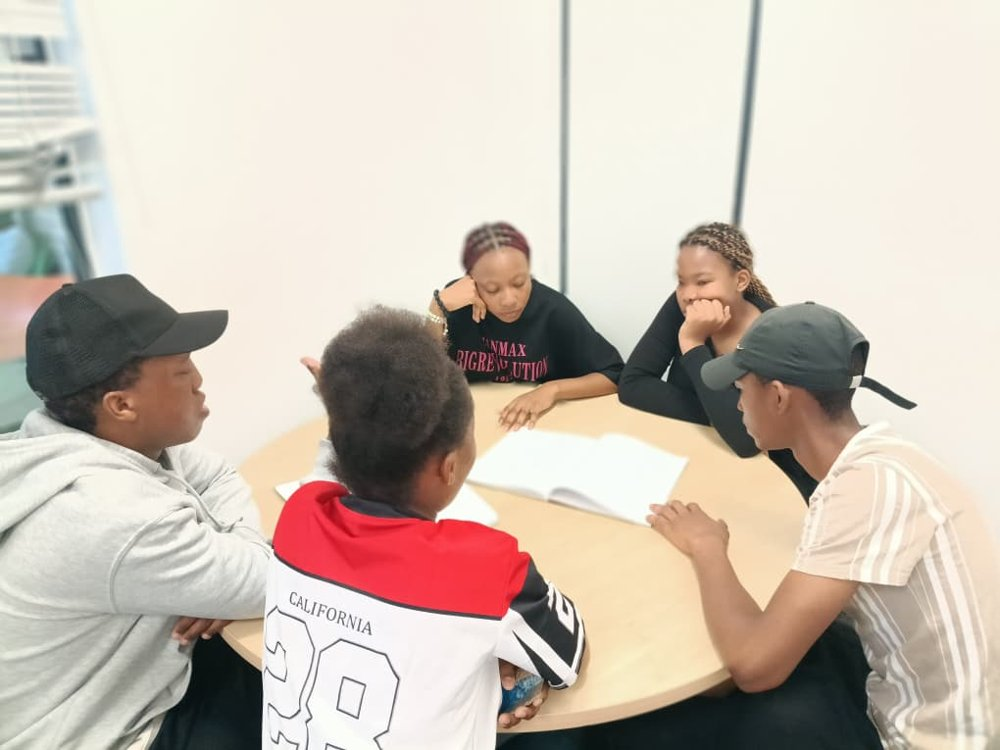

Segopotso Primary School
Where I took my first steps into education, discovering my abilities and learning how to study. Those early years laid the foundation for everything after.
Genuine, approachable and always improving. I turn classroom knowledge into working systems, and mistakes into growth.

About MeI'm a Computer System Engineering student from Botswana School of Business Sciences. I don't present myself as a perfect student. I show my evolution from disengagement to accountability, maturity, collaboration and friendship. Outside the classroom I enjoy Motswako, music and technology.
My academic journey has not always been easy, nor filled with success. It has been one of growth, challenges, self-discovery and perseverance, and every school I attended shaped who I am today.
Where I took my first steps into education, discovering my abilities and learning how to study. Those early years laid the foundation for everything after.
Academics became more demanding. I struggled with some subjects, lacked motivation and doubted myself, but learned that struggling doesn't mean being incapable. It means still finding your way.
Greater expectations made me more conscious of my future. Through setbacks and doubt, I learned that education is also about discipline, maturity, resilience and responsibility.
Now a first-year tertiary student, I see this as growth and a second chance to improve: proof that my past struggles do not define my future.
I am no longer just the student who struggled; I am a student who survived those struggles, learned from them, and continues to dream of becoming something greater.
Starting tertiary education has taught me that being a student at this level is less about being told what to do and more about deciding what to do. In school, deadlines and routines were often set for me. At Botswana School of Business Sciences, I have to build my own structure, and that has been the biggest adjustment of my first year.
I have learned that time rarely disappears in big pieces; it slips away in small ones. Putting a task off until later felt harmless, but those delays piled up. I am learning to break work into smaller parts, start earlier than feels necessary, and treat a deadline as the end of a process rather than the start of one. I have not mastered this yet, and I still have days when I lose focus, but I now notice it sooner and correct course.
My study habits have changed the most. Rereading notes once felt like studying, but it only made the material feel familiar, not usable. Active recall changed that, because testing myself shows me honestly what I do and do not understand. Flashcards help me hold on to definitions and technical terms, the Pomodoro technique keeps me focused by breaking study into short intervals, and memory palaces let me tie information to places I already know. Together these methods are making me a more independent, organised and disciplined learner.
I also had to be honest about my past. In junior and senior secondary school, I sometimes lacked motivation and doubted my ability, and I read struggling as proof that I was not capable. Now I see it as a sign that I was still finding my way. That shift is the heart of a growth mindset for me: ability is not fixed, and a mistake is information, not a verdict.
Group work taught me the same lesson from another angle. I began as a member who avoided responsibility, and I realised I could not expect the team to succeed while I was unwilling to contribute. Choosing accountability improved both my work and our friendships. It showed me that learning at tertiary level is shared; I learn from classmates as much as from lecturers.
I want to keep improving in three areas: starting work earlier, asking for help sooner instead of waiting until I am stuck, and applying what I learn in Microsoft Access, system development and statistics to real projects. An industrial attachment would give me the chance to do exactly that. My journey is still unfolding, and I am learning that progress comes from consistent effort, honest reflection and the courage to keep going.
Designing systems that solve real problems and support decision-making.

Database design and management: tables, relationships, queries and forms.
Analysing information and turning data into useful insight.
Improving academically takes discipline and effective strategies. These four help me most:
Tap a strategy to see why it works.
They help me become a more independent, organised and disciplined learner.
Using Tuckman's Five Stages of Group Development, here is how my group moved from strangers to a team, and how I changed along the way.

A group of strangers with different personalities and expectations. Communication wasn't established and commitment was hard to build.
The hardest stage: poor communication, delays and inconsistent participation, including mine. I avoided responsibility until I realised I couldn't expect the group to succeed while unwilling to contribute. I chose to change.
We understood each other better, communicated openly and built real friendships. Classmates became people who could joke, talk and support one another.
Cooperation improved. I contributed ideas and took ownership. A successful team doesn't start with perfect members; it grows through commitment, trust and communication.
The task ended, but the friendships and lessons stayed. There's room to improve on communication and accountability, and the growth made it valuable.
Teamwork starts with individual accountability. Our journey was one of transformation, from chaos to cooperation and from unfamiliarity to friendship.
Botswana · +267 78 777 846 · bs-cse26-023@thuto.bac.ac.bw
First-year Computer System Engineering student at Botswana School of Business Sciences, seeking an industrial attachment. I have foundations in system development, Microsoft Access database design and statistical analysis. I am genuine, approachable and accountable, and I learn quickly from experienced professionals.
Motswako, music and technology.
Available on request.
Tumisang Sejeso Botswana Cell: +267 78 777 846 Email: bs-cse26-023@thuto.bac.ac.bw 19 November 2026 The Human Resources Manager [Company Name] [Company Address] Dear Sir/Madam, RE: APPLICATION FOR INDUSTRIAL ATTACHMENT I am writing to apply for an opportunity to undertake industrial attachment at your organisation as part of my Computer System Engineering programme. I am eager to gain practical experience, develop my technical abilities, and gain exposure to a professional working environment. My academic training has equipped me with foundational knowledge in system development, Microsoft Access database design and management, and statistical analysis. I have developed an understanding of designing systems, managing data, solving technical problems, and analysing information to support decision-making. I am enthusiastic about technology and continuously seek opportunities to learn, improve, and apply my knowledge in practical situations. I am a developing professional who values teamwork, adaptability, accountability, and continuous learning. I am willing to learn from experienced professionals and contribute positively to the organisation wherever I am assigned. I believe industrial attachment would provide a valuable opportunity to bridge the gap between academic learning and industry practice while allowing me to develop the skills and experience necessary for my future career. I would appreciate the opportunity to be considered for industrial attachment at your organisation. Please find my CV attached for your consideration. Thank you for your time and consideration. Yours faithfully, Tumisang Sejeso
Dear Hiring Manager, I hope this email finds you well. Please find attached my CV and cover letter for consideration for an industrial attachment opportunity at your organisation. I am currently studying Computer System Engineering and am seeking an opportunity to gain practical industry experience, strengthen my technical skills, and learn from professionals within the field. I would appreciate your consideration of my application and the opportunity to contribute to your organisation while developing my professional experience. Thank you for your time. Kind regards, Tumisang Sejeso Computer System Engineering Student +267 78 777 846
Cell: +267 78 777 846 · Email: bs-cse26-023@thuto.bac.ac.bw